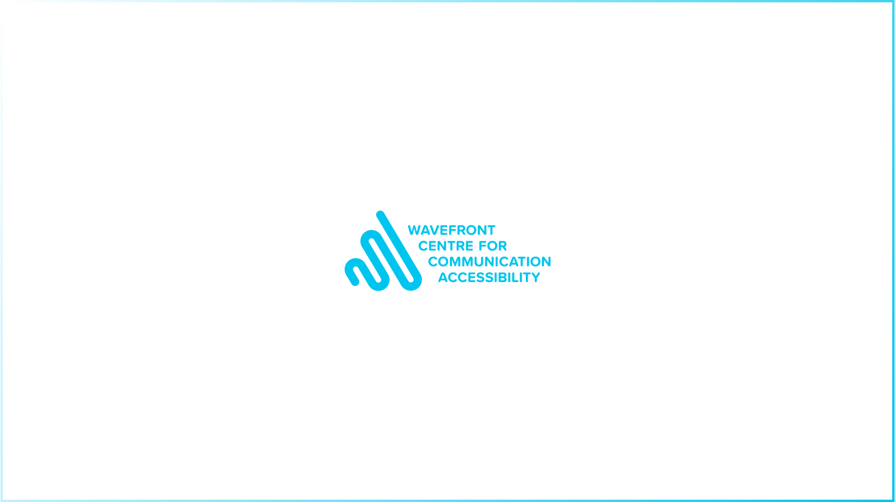

Project Overview
Wavefront Centre for Communication Accessibility is a British Columbia based charity that exists to reduce communication barriers by providing access and inclusion for the Deaf and Hard of Hearing (HoH).
As part of a senior design evaluation methods course, my team and I was challenged to work with an industry partner to conduct a real-world evaluation of one of their products. We met regularly with our company champion, and explored the mid-point between their need for a professional evaluation, and our need for an authentic design challenge. We came to the conclusion of conducting a heuristic evaluation of their website, as well as several usability studies, and presented our findings and possible design solutions.
Interested in seeing all the data we collected? Read the full research report.
Why an heuristic evaluation?
The main reason we chose to do a heuristic evaluation was due to the tight time constraints of the project, since conducting this type of research would be fast and efficient. Each team member was able to take their own sections of the website and share their findings with the rest of the group. This also allowed us to narrow the scope, and focus on problem areas that we could structure our user interviews around.
Evaluating the e-commerce Shop section of the website
Following Jakob Nielsen’s 10 usability heuristics for user interface design, I explored the e-commerce section of Wavefront’s website. I looked at this through the lens of both the client and staff perspectives. As a client, I gave myself tasks such as “Buy x products, and proceed to checkout”. As a staff member, I challenged myself to think about finding product information. "If a customer called asking to learn more about x product, how might I go about finding that information for them?"
The three most important issues I found
Although many heuristics were broken, I decided to focus on three issues that had the most negative impact on usability.
1. User control and freedom.
When viewing a product, users do not have a clearly marked exit to go back to the previous page.
2. Visibility of system status.
Users cannot view their cart without having to click on a product’s ‘Add to cart’ button.
3. Recognition rather than recall.
If a product is removed from the cart, there is no way for the user to retrieve that item.
Design proposal and mockups
I designed mock-ups that communicated the best way to tackle these problems.
1. User control and freedom.
I wanted to alleviate the frustration users might face if they accidentally click on a product. By introducing breadcrumbs above the product’s image, it shows users how they got to that product, but also how to easily go back if they made a mistake.
2. Visibility of system status.
I added a button in the bottom right corner of the page that allows users to open and close their cart. This allows them to easily view the items in their cart regardless of whether they are in the Shop section.
3. Recognition rather than recall.
Lastly, during my evaluation I found that when I removed items from the cart, there was no easy way to retrieve that item, or any messages confirming that I had successfully removed the item from my cart. To accommodate for this, I added a simple message box that appears at the top of the user’s cart. It tells them the name of the item that was removed, and gives them the option to Undo that action, and add the item back into the cart.

Gathering data using think-aloud usability studies
To dive further into the user experience, we also conducted think-aloud usability studies to allow us to gather both qualitative (interview/surveys) and quantitative (task time, error counting) data. Qualitative data helped us acquire a better understanding of what areas of the website will impact frustration or satisfaction levels. It also provided us with an understanding of the goals each persona group has within their unique contexts and situations. We also gained insight into how the website could or could not meet our persona groups’ expectations. Quantitative data helped us assess which tasks were easier to perform during the controlled studies. We used a timer to measure speed and task proficiency and we kept track of the number of errors committed during the scenarios. Although we had to account for other variables such as participants’ technological proficiency, and internet lag, we made sure to note these in our final report.
Writing a testing plan that is authentic to the user experience
I helped plan, write, and conduct 4 usability studies using the think-aloud method. I wrote scenarios and tasks that reflected real world situations of why someone might go to the Wavefront website, specifically the e-commerce section. We based our tasks around information architecture, specifically focusing on how people might find important product information in a timely manner.

Metrics to measure the success of our proposal
Although our project did not entail fully implementing our proposals for Wavefront, there are several ways we could have measured the success of our design proposals. One way would be to compare the amount of time it takes users to perform tasks before and after the changes. If I were to move forward with this evaluation, I would make sure that participants testing the new interface had not previously been exposed to the current site, as they may already be familiar with where or how to find information, resulting in faster than average task completion times.
How a 1-month timeframe prepared me for future projects
This project gave me the valuable experience of working under pressure in a time-sensitive manner. Defining the project goals and scoping the outcomes allowed us to present a research-backed and tangible final product. This experience has prepared me for how to plan, structure, and conduct user testing sessions quickly yet thoroughly, and I routinely reference this project when planning usability studies for my other projects!